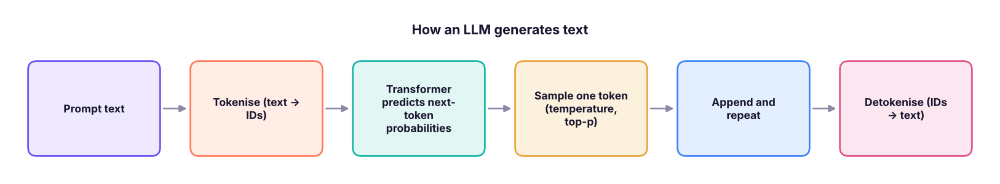
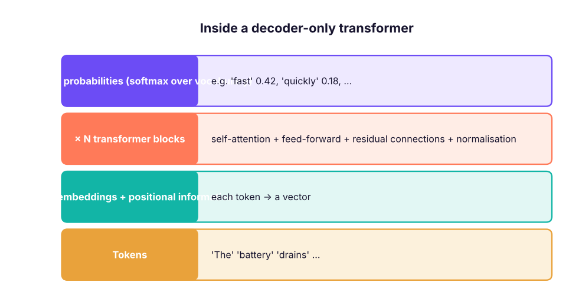
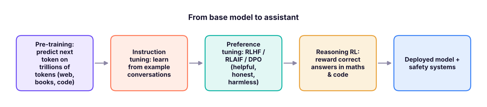

How Large Language Models Work: Tokens, Embeddings, Transformers and Training
Open the black box. Tokens and tokenisation (built from scratch), next-token prediction and sampling with temperature, embeddings, attention and the transformer, pre-training, instruction tuning and RLHF, context windows, reasoning models, why LLMs hallucinate, and how to choose among Claude, GPT, Gemini, Llama, Mistral, DeepSeek and Qwen.
- Explain tokens, vocabularies and why token counts drive cost and limits
- Describe next-token prediction and the effect of temperature and top-p sampling
- Explain embeddings, self-attention and the transformer at an intuitive level
- Describe the training stages (pre-training, instruction tuning, preference optimisation) and reasoning models
- Explain hallucinations and choose a model by capability, cost, latency, privacy and context length
An LLM in one sentence
A large language model is a neural network trained to predict the next token given the previous ones. Doing that very well on trillions of words forces it to learn grammar, facts, reasoning patterns and styles, which instruction tuning then turns into a helpful assistant.

Tokens
Models do not read characters or whole words but tokens: frequent words, word pieces and punctuation. English averages roughly 4 characters (¾ of a word) per token; Indian languages and code usually need more tokens per word.
import re, collections, pandas as pd, numpy as np
corpus = pd.read_csv("customer_reviews.csv").review_text.str.lower().tolist()
def bpe_train(texts, merges=60):
words = collections.Counter(w for t in texts for w in re.findall(r"[a-z']+", t))
vocab = {tuple(w) + ("</w>",): c for w, c in words.items()}
rules = []
for _ in range(merges):
pairs = collections.Counter()
for sym, c in vocab.items():
for a, b in zip(sym, sym[1:]): pairs[a, b] += c
best = max(pairs, key=pairs.get); rules.append(best)
new = {}
for sym, c in vocab.items():
out, i = [], 0
while i < len(sym):
if i < len(sym) - 1 and (sym[i], sym[i + 1]) == best: out.append(sym[i] + sym[i + 1]); i += 2
else: out.append(sym[i]); i += 1
new[tuple(out)] = c
vocab = new
return rules
def bpe_encode(word, rules):
sym = list(word) + ["</w>"]
for a, b in rules:
i = 0
while i < len(sym) - 1:
if sym[i] == a and sym[i + 1] == b: sym[i:i + 2] = [a + b]
else: i += 1
return sym
rules = bpe_train(corpus, merges=300)
print("first merges learned:", ["".join(r) for r in rules[:10]])
for w in ["battery", "charging", "superb", "unboxing", "skillnavora"]: print(f"{w:12s} →", bpe_encode(w, rules))first merges learned: ['s</w>', 'e</w>', 'y</w>', 't</w>', 'd</w>', 'er', 'th', 're', 'ar', 'in'] battery → ['battery</w>'] charging → ['charg', 'ing</w>'] superb → ['superb</w>'] unboxing → ['u', 'n', 'b', 'o', 'x', 'ing</w>'] skillnavora → ['s', 'k', 'il', 'l', 'n', 'a', 'v', 'or', 'a</w>']
This is byte-pair encoding (BPE), the algorithm (in byte-level form) behind GPT, Llama and Claude tokenisers: start from characters and repeatedly merge the most frequent adjacent pair. Common words become one token; rare words split into pieces.
| Why tokens matter | Example |
|---|---|
| Cost | APIs charge per million input and output tokens |
| Limits | The context window (e.g. 200K–1M tokens) caps prompt + conversation |
| Speed | Output tokens are generated one at a time |
| Quirks | Counting letters or reversing words is hard when words are chunks |
Count tokens with the provider's tools (Anthropic messages.count_tokens, OpenAI tiktoken) instead of guessing.
Next-token prediction and sampling
The model outputs a probability for every token in its vocabulary. A tiny bigram model trained on our reviews shows the idea:
tokens = [w for t in corpus for w in re.findall(r"[a-z']+|[.,!]", t)]
bigram = collections.defaultdict(collections.Counter)
for a, b in zip(tokens, tokens[1:]): bigram[a][b] += 1
def next_probs(word, k=5):
c = bigram[word]; total = sum(c.values()); return [(w, round(n / total, 3)) for w, n in c.most_common(k)]
for w in ["battery", "delivery", "not", "worth"]: print(f"after '{w}':", next_probs(w))after 'battery': [('backup', 0.228), ('lasts', 0.174), ('drains', 0.144), ('barely', 0.125), ('swelled', 0.125)]
after 'delivery': [('was', 1.0)]
after 'not': [('worth', 0.283), ('bad', 0.214), ('disappointed', 0.169), ('as', 0.128), ('happy', 0.106)]
after 'worth': [('every', 0.495), ('the', 0.256), ('it', 0.199), ('price', 0.05)]rng = np.random.default_rng(3)
def sample(word, temperature=1.0, top_p=1.0):
c = bigram[word]; words = list(c); logits = np.log(np.array([c[w] for w in words], float))
p = np.exp(logits / temperature); p /= p.sum()
order = np.argsort(-p); keep = order[: max(1, int(np.searchsorted(np.cumsum(p[order]), top_p) + 1))] # nucleus (top-p)
q = np.zeros_like(p); q[keep] = p[keep]; q /= q.sum()
return words[rng.choice(len(words), p=q)]
def generate(start, n=10, **kw):
out = [start]
for _ in range(n):
if not bigram[out[-1]]: break
out.append(sample(out[-1], **kw))
return " ".join(out)
for t in (0.2, 1.0, 2.0): print(f"temperature {t}:", generate("battery", temperature=t))temperature 0.2: battery backup is crisp even outdoors , not worth every rupee temperature 1.0: battery easily lasts two days great happy with the hinge broke temperature 2.0: battery backup is smooth colours on calls ! delivery was totally
| Setting | Effect | Use |
|---|---|---|
| Low temperature (0–0.3) | Picks the most likely tokens: focused, repeatable | Extraction, classification, SQL |
| Higher temperature (0.7–1.0) | More varied wording | Brainstorming, marketing copy |
| top-p (nucleus) | Sample only from the smallest set covering p of probability | Cuts off unlikely nonsense |
A real LLM does the same thing with a transformer instead of a bigram table, conditioning on the whole context, not one word. (Newer reasoning models such as Claude Opus 5.5 manage sampling internally and control depth with an "effort" setting instead.)
Embeddings and attention
Every token ID is mapped to an embedding: a vector of hundreds or thousands of numbers. Training places tokens with similar meaning near each other.
Self-attention lets each token look at every other token and decide what matters: in "The battery died because it was old", attention links "it" to "battery". A transformer stacks dozens of attention + feed-forward layers; the final layer produces next-token probabilities.

def softmax(x): e = np.exp(x - x.max(-1, keepdims=True)); return e / e.sum(-1, keepdims=True)
words = ["the", "battery", "died", "because", "it", "was", "old"]
rng2 = np.random.default_rng(0); E = rng2.normal(0, 1, (7, 8)); E[4] = E[1] + rng2.normal(0, .3, 8) # make "it" resemble "battery"
Q, K = E @ rng2.normal(0, .5, (8, 8)) + E, E # toy query/key projections
A = softmax(Q @ K.T / np.sqrt(8))
print("attention from 'it' to each word:", dict(zip(words, A[4].round(2).tolist())))attention from 'it' to each word: {'the': 0.01, 'battery': 0.43, 'died': 0.03, 'because': 0.01, 'it': 0.51, 'was': 0.02, 'old': 0.0}How models are trained

- Pre-training produces a base model that continues text but does not follow instructions well.
- Instruction tuning (SFT) teaches the conversation format.
- Preference optimisation (RLHF, Constitutional AI, DPO) aligns answers with human preferences and safety principles.
- Reasoning models are further trained with reinforcement learning to "think" before answering (extended or adaptive thinking), which improves maths, coding and planning at the cost of more tokens.
Context windows and memory
An LLM has no memory between API calls: everything it should know must be in the context window (system prompt + conversation + documents + tool results). Long contexts (hundreds of thousands to a million tokens) hold whole codebases or reports, but cost more and can dilute attention; retrieval (RAG, lesson 5) puts only relevant passages in context.
Hallucinations
Because the model generates plausible continuations, it can state false facts fluently, especially about rare facts, recent events, numbers and citations.
| Reduce hallucinations by… | How |
|---|---|
| Grounding | Provide source documents (RAG) and ask for answers only from them, with citations |
| Tools | Let the model call search, SQL or a calculator instead of recalling |
| Prompting | Allow "I don't know"; ask it to quote sources first, then answer |
| Verification | Check outputs automatically (schemas, SQL execution, tests) and with humans for high stakes |
| Choice of model | Stronger models hallucinate less; reasoning helps on multi-step problems |
The 2026 model landscape
| Family | Provider | Notes |
|---|---|---|
| Claude (Fable, Opus, Sonnet, Haiku) | Anthropic | Strong reasoning, coding and agentic tool use; 1M-token context on current models |
| GPT and o-series | OpenAI | Broad ecosystem, multimodal |
| Gemini | Long context, multimodal, Google Workspace integration | |
| Llama | Meta | Open-weight, self-hostable |
| Mistral, DeepSeek, Qwen, Gemma | Various | Open-weight options, some very cost-efficient |
| Sarvam, Krutrim and others | Indian providers | Indic-language focus |
Choosing a model: quality on your task (test it), cost per task, latency, context length, tool use, data privacy (cloud region, zero retention, self-hosting), and licence. A common pattern: a strong model for hard steps and a small, fast model (e.g. Claude Haiku) for high-volume simple steps.
Summary
- LLMs predict the next token; generation is a loop of predict, sample, append.
- Tokens (BPE pieces) drive cost, speed and context limits; count them with provider tools.
- Temperature and top-p trade focus for variety; use low randomness for extraction and analytics.
- Embeddings encode meaning; self-attention lets tokens use context; transformers stack attention layers.
- Pre-training → instruction tuning → preference tuning (→ reasoning RL) creates assistants.
- LLMs have no memory beyond the context window and can hallucinate; ground them with documents and tools and verify outputs.
1. What does an LLM fundamentally predict?
2. Why do API costs depend on tokens?
3. Which temperature suits extracting invoice fields?
4. What does self-attention do?
5. Why do LLMs hallucinate?
6. What is RLHF used for?
(1) Train the BPE tokeniser with 50 and 1,000 merges: how many tokens does a 20-word review need in each case? (2) Use the bigram model to generate 5 reviews at temperature 0.7. (3) With the Anthropic token-counting endpoint (GenAI lesson 3), compare token counts of the same sentence in English and Hindi.
Show solution
for m in (50, 1000):
r = bpe_train(corpus, merges=m); review = corpus[5]
print(m, sum(len(bpe_encode(w, r)) for w in re.findall(r"[a-z']+", review)), "tokens for", len(review.split()), "words")
for _ in range(5): print(generate("the", n=12, temperature=0.7))Q: Explain how ChatGPT or Claude works to a business audience. It is a model trained on vast text to predict the next word-piece; that teaches it language and knowledge. Further training with example conversations and human feedback makes it follow instructions helpfully and safely. It does not look things up unless connected to tools or documents.
Q: What is a context window? The maximum number of tokens (prompt, history, documents, output) the model can consider in one request.
Q: How do you reduce hallucinations in a business application? Retrieval-augmented generation with citations, tool use for facts and numbers, instructions to say "I don't know", structured outputs with validation, evaluation sets and human review for high-stakes outputs.